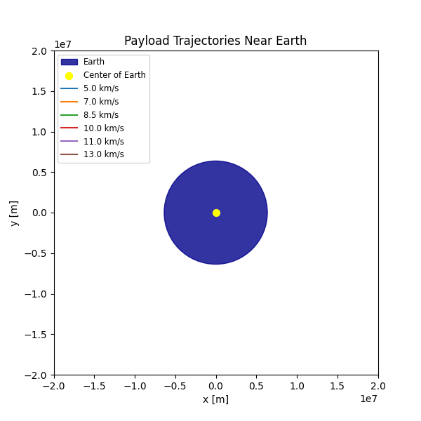
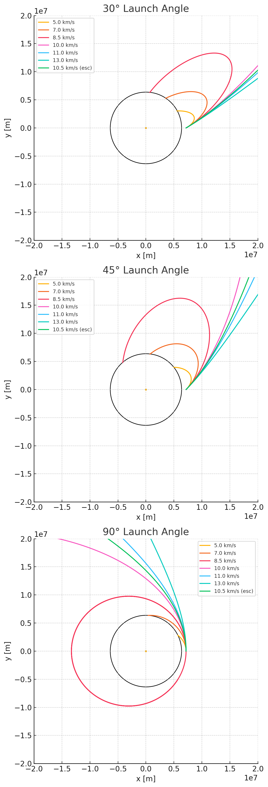

Trajectories of a Freely Released Payload Near Earth
1. Introduction
When an object is released from a moving rocket near Earth, its subsequent path depends critically on its initial position, velocity vector, and gravitational forces. Possible trajectories include:
- Elliptical: Closed orbits when the specific orbital energy is negative.
- Parabolic: Marginal escape at zero specific energy.
- Hyperbolic: Open, escape trajectories when specific energy is positive.
This document analyzes these cases, derives the governing equations, and provides a Python-based simulation tool for visualizing payload trajectories.
2. Theoretical Background
2.1 Newton's Law of Gravitation
where:
- \(G\) = 6.67430e-11 m³·kg⁻¹·s⁻² (gravitational constant)
- \(M_e\) ≈ 5.972e24 kg (Earth mass)
- \(r\) = distance from Earth's center
The resulting acceleration on the payload is:
2.2 Specific Orbital Energy
- \(\epsilon < 0\): elliptical orbit
- \(\epsilon = 0\): parabolic (escape)
- \(\epsilon > 0\): hyperbolic (escape)
The escape velocity at radius \(r\) is:
3. Equations of Motion and Numerical Integration
We integrate the second-order ODE:
into a system of first-order ODEs:
We use a fourth-order Runge–Kutta integrator (RK4).


4. Discussion of Results
- Suborbital: The payload falls back to Earth before completing an orbit.
- Elliptical (LEO): The payload enters a closed orbit, demonstrating stable insertion possible for satellite deployment.
- Hyperbolic/Escape: The payload exceeds escape velocity and departs Earth's gravitational well.
These outcomes map directly onto real mission profiles: - Orbital insertion requires precise velocity vector alignment around circular speed. - Reentry scenarios often begin suborbital or require a retrograde burn to transition from orbit into an atmospheric descent. - Escape trajectories underpin lunar, interplanetary, or deep-space missions.
5. Extensions and Further Work
- Incorporate atmospheric drag for reentry modeling.
- Extend to three dimensions and include Earth's rotation (Coriolis effects).
- Add perturbations: J2 oblateness, solar radiation pressure, third-body gravity.
6. Conclusion
This tool and analysis enable exploration of payload trajectories near Earth, from suborbital hops to interplanetary escape, illustrating the critical dependence on initial conditions and gravitational dynamics.
7. Python Simulation Scripts
import numpy as np
import matplotlib.pyplot as plt
from matplotlib import animation
from matplotlib.animation import PillowWriter
# === Physical constants ===
mu = 3.986004418e14 # [m^3/s^2]
Re = 6.371e6 # [m]
alt = 800e3 # [m]
r0 = np.array([Re + alt, 0]) # initial position
# Six initial speeds [m/s]
v_list = np.array([5, 7, 8.5, 10, 11, 13]) * 1e3
# Time settings
dt = 10.0 # [s]
t_max = 2e4 # [s]
num_steps = int(t_max / dt)
def integrate_with_impact(v0):
traj = np.full((num_steps, 4), np.nan)
traj[0] = [r0[0], r0[1], 0.0, v0]
for i in range(1, num_steps):
x, y, vx, vy = traj[i-1]
r = np.hypot(x, y)
if r <= Re:
break
# RK4 integration
def deriv(s):
rr = np.hypot(s[0], s[1])
return [s[2], s[3], -mu * s[0] / rr**3, -mu * s[1] / rr**3]
k1 = deriv([x, y, vx, vy])
k2 = deriv([x+0.5*dt*k1[0], y+0.5*dt*k1[1], vx+0.5*dt*k1[2], vy+0.5*dt*k1[3]])
k3 = deriv([x+0.5*dt*k2[0], y+0.5*dt*k2[1], vx+0.5*dt*k2[2], vy+0.5*dt*k2[3]])
k4 = deriv([x+dt*k3[0], y+dt*k3[1], vx+dt*k3[2], vy+dt*k3[3]])
traj[i] = traj[i-1] + (dt/6)*(np.array(k1) + 2*np.array(k2)
+ 2*np.array(k3) + np.array(k4))
return traj
# Compute trajectories
trajectories = [integrate_with_impact(v) for v in v_list]
# === Plot setup ===
fig, ax = plt.subplots(figsize=(6,6))
ax.set_aspect('equal')
ax.set_xlim(-2e7, 2e7)
ax.set_ylim(-2e7, 2e7)
ax.set_xlabel('x [m]')
ax.set_ylabel('y [m]')
ax.set_title('Payload Trajectories Near Earth')
from matplotlib.patches import Circle
# Earth patch (dark blue) with legend label
earth = Circle((0, 0), Re, color='darkblue', alpha=0.8, label='Earth')
ax.add_patch(earth)
# Center point (yellow) with legend label
ax.scatter(0, 0, color='yellow', s=50, label='Center of Earth')
# Trajectory lines with distinct tab10 colors
colors = plt.cm.tab10(np.arange(len(v_list)))
lines = []
for i, v in enumerate(v_list):
ln, = ax.plot([], [], color=colors[i], label=f'{v/1e3:.1f} km/s')
lines.append(ln)
# Combined legend for speeds, Earth, and center
ax.legend(loc='upper left', fontsize='small')
def init():
for ln in lines:
ln.set_data([], [])
return lines
def update(frame):
for idx, traj in enumerate(trajectories):
x = traj[:frame, 0]
y = traj[:frame, 1]
lines[idx].set_data(x, y)
return lines
ani = animation.FuncAnimation(fig, update, frames=num_steps,
init_func=init, interval=20, blit=True)
# Save as GIF, 30 seconds total
fps_gif = num_steps / 30.0
ani.save('trajectories.gif', writer=PillowWriter(fps=fps_gif))
print("Saved animation as trajectories.gif (30 seconds)")
import numpy as np
import matplotlib.pyplot as plt
# === Physical constants ===
mu = 3.986004418e14 # [m^3/s^2]
Re = 6.371e6 # [m]
alt = 800e3 # [m]
r0 = np.array([Re + alt, 0]) # initial position
# Time settings
dt = 10.0 # [s]
t_max = 2e4 # [s]
num_steps = int(t_max / dt)
def integrate(v_mag, angle_deg):
"""
Integrate trajectory given speed magnitude and launch angle.
Returns an array of shape (n,4): [x, y, vx, vy]
"""
angle = np.deg2rad(angle_deg)
v0 = v_mag * np.array([np.cos(angle), np.sin(angle)])
traj = np.full((num_steps, 4), np.nan)
traj[0] = [r0[0], r0[1], v0[0], v0[1]]
def deriv(s):
rr = np.hypot(s[0], s[1])
return [s[2], s[3], -mu * s[0] / rr**3, -mu * s[1] / rr**3]
for i in range(1, num_steps):
x, y, vx, vy = traj[i-1]
r = np.hypot(x, y)
if r <= Re:
return traj[:i] # stop at impact
k1 = deriv([x, y, vx, vy])
k2 = deriv([x+0.5*dt*k1[0], y+0.5*dt*k1[1], vx+0.5*dt*k1[2], vy+0.5*dt*k1[3]])
k3 = deriv([x+0.5*dt*k2[0], y+0.5*dt*k2[1], vx+0.5*dt*k2[2], vy+0.5*dt*k2[3]])
k4 = deriv([x+dt*k3[0], y+dt*k3[1], vx+dt*k3[2], vy+dt*k3[3]])
traj[i] = traj[i-1] + (dt/6)*(np.array(k1) + 2*np.array(k2) + 2*np.array(k3) + np.array(k4))
return traj
# Speeds including escape velocity
base_speeds = np.array([5, 7, 8.5, 10, 11, 13]) * 1e3
v_escape = np.sqrt(2 * mu / np.linalg.norm(r0))
speeds = np.append(base_speeds, v_escape)
# Angles to plot
angles = [30, 45, 90]
# Create subplots stacked vertically
fig, axes = plt.subplots(nrows=3, ncols=1, figsize=(6, 18))
for ax, angle in zip(axes, angles):
# Compute trajectories for this angle
trajectories = [integrate(v, angle) for v in speeds]
labels = [f"{v/1e3:.1f} km/s" + (" (esc)" if np.isclose(v, v_escape) else "") for v in speeds]
# Plot each trajectory
for traj, label in zip(trajectories, labels):
ax.plot(traj[:,0], traj[:,1], label=label)
# Draw Earth outline
from matplotlib.patches import Circle
circle = Circle((0, 0), Re, fill=False)
ax.add_patch(circle)
ax.scatter(0, 0, s=5)
ax.set_aspect('equal')
ax.set_xlim(-2e7, 2e7)
ax.set_ylim(-2e7, 2e7)
ax.set_title(f'{angle}° Launch Angle')
ax.set_xlabel('x [m]')
ax.set_ylabel('y [m]')
ax.legend(fontsize='small')
plt.tight_layout()
plt.show()